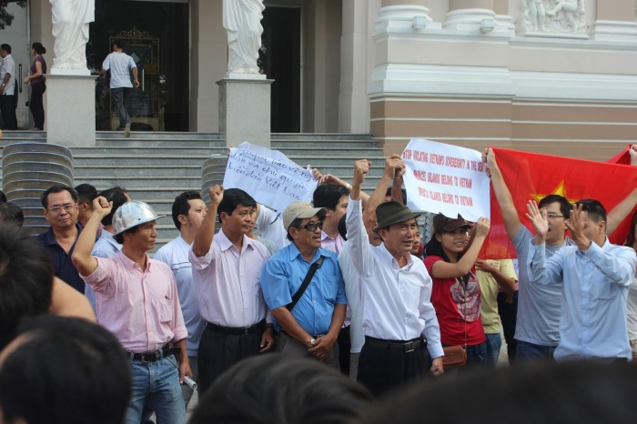

Tôi rời nhà lúc 06 giờ 30 phút. Đến bến xe bus đường Cộng Hòa tuyến chợ Bến Thành lúc 07 giờ kém 15 phút. Chờ mãi không thấy nhà văn Phạm Đình Trọng đến như đã hẹn, nên đành phải đi trước.
Xuống xe ở dinh Thống Nhất, tôi đi về phía Nhà Hát Lớn thành phố trong tâm trạng hồi hộp. Đây là lần thứ mấy không nhớ, đi biểu tình lần này có về không như các lần trước?

Biểu tình ngày 09 tháng 12 năm 2012
Xung quanh lối vào Nhà Hát Lớn thành phố dầy đặc các lực lượng bảo vệ: công an hàng rào kẽm gai các loại, dân phòng, thanh niên tự nguyện, trật tự đô thị. Người yếu bóng vía chỉ nhìn thấy cảnh này đã phải quay lại chứ đừng nói vô đấy mà hô khẩu hiệu! Trước thềm Nhà Hát Lớn đang có hòa nhạc nhằm phá cuộc mít tinh như thông báo trên mạng. Hòa nhạc chấm dứt. Quảng trường nhỏ trước thềm nhà hát vẫn đông người. Mọi ánh mắt nhìn nhau, tìm hiểu. Không biết ai là người đi biểu tình, ai là người đến phá mít tinh, biểu tình. Không khí nghi kỵ bao trùm không gian. Tôi đi khắp lượt, nhìn thẳng vào mặt các sĩ quan công an đang chỉ huy lực lượng trấn áp, gương mặt họ căng thẳng nhưng không hung hãn, có vẻ như bối rối. Tôi bảo một sĩ quan đeo lon trung tá chừng năm mươi tuổi: Các anh làm việc cẩn thận đấy. Tưởng tôi là cấp trên của họ đi kiểm tra, anh ta vâng dạ nghiêm chỉnh! Một anh bạn trẻ chừng 30 tuổi, trắng trẻo, đẹp trai nhìn tôi trừng trừng. Tôi nhìn lại với ánh mắt giận dữ. Bỗng anh ta hỏi: Chú cũng đi biểu tình à? Tôi quát: Thế thì sao? Tiếng tôi vừa dứt thì cậu thanh niên này nhanh như chớp rút lá cờ đỏ sao vàng giấu trong ngực áo ra, hai tay căng lá cờ lên, vừa hô vừa tiến lên phía Nhà Hát: Trường Sa, Hoàng Sa, Việt Nam. Như cái ngòi nổ đã phát lệnh, tất cả cờ, biểu ngữ giấu trong người được tung ra, tiếng hô vang dậy: Trường Sa, Hoàng Sa là của Việt Nam. Nhìn quanh thấy các bạn tôi, nhà thơ Lưu Trọng Văn, nhà nghiên cứu Khánh Trâm dắt theo con nhỏ, nhà báo La Khương Ngãi, đã có mặt trên thềm nhà hát. Nhưng chưa thấy các vị chủ trì cuộc mít tinh đâu cả. Chúng tôi lại hô vang Trường Sa, Hoàng Sa là của Việt Nam. Đã đảo Trung Quốc xâm lược biển đảo Việt Nam. Một vị cao niên tay chống gậy hô lớn: Bán nước là có tội với tổ tiên! Vừa lúc đó thì anh Lưu Trọng Văn hô: anh Mẫm đã đến. Hoan hô anh Mẫm. Huỳnh Tấn Mẫm, một trong năm vị khởi xướng cuộc mít tinh tại nhà hát thành phố, mở cuốn sổ tay ra và anh bắt đầu đọc. Không có micro cầm tay, anh đọc thư thái, nói rõ lý do cuộc mít tinh, giọng anh đều đều chỉ vài phút thôi, thế là cuộc mít tinh kết thúc, mọi người tràn xuống đường để biểu tình, diễu hành, Lưu Trọng Văn đi đầu hô lớn: Tổ quốc trên hết!
Sau này anh Mẫm kể, anh ra khỏi nhà từ rất sớm, tắt di động và đi hình chữ chi trên hè phố để tránh bị bám đuôi, vì thế, anh là người duy nhất trong năm vị (Tương Lai, Lê Hiếu Đằng, Hồ Ngọc Nhuận, Lê Công Giàu) thoát được sự ngăn chặn tại nhà của công an.
Hai ngày sau cuộc biểu tình đó, hai công an đến gõ cửa nhà tôi. Người đi trước là phó công an quận Tân Bình, nơi tôi cư trú, anh tên là Tâm. Người thứ hai theo sau là một nhân viên còn rất trẻ, cả hai đều mặc thường phục. Câu đầu tiên anh Tâm hỏi: bác Trọng (Phạm Đình Trọng) bữa trước tới đây có việc gì? Thái độ của Tâm hòa nhã. Tôi để bà xã tôi trả lời.
Người ta vây bác Trọng nên bác ấy vào đây. Có một ông già mà đến mấy chục người canh giữ cả buổi sáng, các chú tiêu tiền của dân đóng thuế như thế à?
Sĩ quan Tâm không trả lời được các câu hỏi của một phụ nữ quanh năm ở nhà nội trợ như bà xã tôi. Cuối cùng anh Tâm quay ra khuyên giải: các bác lớn tuổi rồi, nghỉ ngơi an hưởng tuổi già. Bà xã tôi lại vặn: Thế mình ở đây sung sướng, để mặc bà con người dân bị Tàu nó bắn giết ngoài biển à? Anh Tâm lại nói: Việc đó để Đảng và nhà nước lo! Bà xã tôi lại nói: Ông Trọng Lú thì làm sao mà lo được? Anh Tâm hỏi: Trọng Lú là ai? Bà xã tôi thật thà: Thế chú không biết Trọng Lú là ông Nguyễn Phú Trọng, Tổng Bí thư à? Tôi thấy ở ngoài Hà Nội ai cũng gọi ông ấy là Trọng Lú.
Sĩ quan Tâm quay sang tôi, bằng một giọng nghiêm túc, hỏi: Vậy theo chú Khải thì ai lãnh đạo đảng bây giờ là tốt nhất? Tôi trả lời: Nếu chỉ bầu Tổng Bí thư trong bộ chính trị thì bác Hồ luôn là người Thanh Hóa! Rồi tôi kể chuyện “Bác Hồ là người Thanh Hoá” cho anh Tâm nghe: Có bốn anh đi chơi với nhau. Ba anh là người Thanh Hóa, một anh là người Nghệ An. Anh quê Nghệ An nói: bác Hồ là người quê tôi. Ba anh kia không chịu. Cuối cùng phải bầu. Kết quả bác Hồ là người Thanh Hóa. Kể đến đây, tôi nhấn mạnh: rõ ràng bầu dân chủ, công khai, minh bạch mà bác Hồ vẫn là người Thanh Hóa, vì cái đa số ấy người ta gọi là “đa số tối thiểu”. Đảng của các anh có biết bao người tài giỏi và tốt. Nếu bầu Tổng Bí thư dân chủ trong toàn đảng thì chắc chắn sẽ có một Tổng Bí thư đủ sức lãnh đạo đảng thoát khỏi tình trạng bế tắc.
Anh Tâm chăm chú nghe tôi nói và không có phản ứng gì. Tôi tiếp tục: Là một nhà báo, tôi đi biểu tình và quan sát rất kỹ, nếu người ta muốn dập tắt cuộc biểu tình từ phút đầu tiên thì chắc chắn làm được, vì lực lượng đàn áp nhiều hơn lực lượng biểu tình, nhưng biểu tình vẫn diễn ra, sau đó mới bị chia cắt ra từng mảnh nhỏ. Hình ảnh của cuộc biểu tình lập tức được truyền đi toàn thế giới. Vậy là, đảng và nhà nước Việt Nam cũng cần để cho Trung Quốc biết rằng, nhân dân Việt Nam không bao giờ chịu mất biển đảo của mình.
Sĩ quan Tâm nghe tôi một cách chăm chú, sau đó anh nói: Nếu chú biết được như thế thì tốt quá! Trước khi ra về, anh Tâm còn nói: Thế nào cháu cũng phải gặp bác Trọng để trao đổi với bác ấy!
Sau khi gặp sĩ quan Tâm, tôi suy nghĩ và thấy cần phải viết một bài đưa lên mạng internet nhận định về cuộc biểu tình ở Sài Gòn ngày 09.12.2012. Bài đó có nhan đề: “Thấy gì qua cuộc biểu tình ngày 09/12/2012 tại Sài Gòn”. Trang mạng Bauxite và BBC tiếng Việt đã đăng bài này ngày 15/12/2012.
Trong bài viết đó tôi nhấn mạnh vài ý chính:
Thứ nhất, tuy những người chủ soái phát động biểu tình là các vị nhân sĩ trí thức Hồ Ngọc Nhuận, Lê Công Giàu, Lê Hiếu Đằng, Tương Lai bị ngăn chặn đến nơi tập kết một cách hết sức vô lý, bất chấp pháp luật như các vị ấy đã lên tiếng tố cáo, phản đối sau này nhưng cuộc biểu tình vẫn nổ ra rất ròn rã trong tiếng thét vang của lớp trẻ. Những tiếng hô: “Hoàng Sa, Trường Sa là của Việt Nam”, hay “Đả đảo Trung Quốc xâm lược biển đảo của Việt Nam” và “Bảo vệ tổ quốc Việt Nam”… vang vọng cả một góc trời, nói lên rằng lòng yêu nước thiết tha của giới trẻ với khát vọng bảo vệ toàn vẹn lãnh thổ, biển đảo của tổ quốc mà cha ông đã đổ bao xương máu để gìn giữ là có thật. Điều đó nói lên rằng, những người chủ xướng cuộc biểu tình này là lương tâm của đất nước.
Thứ hai, lớp trẻ Sài Gòn nói riêng và cả nước nói chung bao giờ cũng là những người lính tiên phong, can đảm nhất để bảo vệ tổ quốc. Cho dù bao nhiêu cám dỗ, bao nhiêu sự bày đặt để đánh lạc hướng tuổi trẻ, nhưng những tâm hồn trẻ sáng suốt và nhạy cảm nhất vẫn dũng cảm xông lên hàng đầu bất chấp hiểm nguy để “quyết tử cho tổ quốc quyết sinh”.
Điều thứ ba tôi cảm nhận được ở sáng ngày 09.12.12 đó là, ngay cả những bạn trẻ được điều đến để chia cắt cuộc biểu tình thì từ đáy lòng họ cũng cảm thấy mình đang làm điều gì đó không phải, không đúng với lương tâm mình. Tôi đã tiến đến trước hàng quân áo xanh của “thanh niên tình nguyện” và nhìn thẳng vào các bạn trẻ này. Thực lòng, tôi rất cảm tình với các bạn bởi hầu hết các gương mặt đều ánh lên vẻ hiền hòa, dễ mến. Chính vì thế mà khi ông chỉ huy của họ mặc áo sơ mi cộc tay (sau này tôi mới biết là thượng tá, trưởng công an quận 1 Trần Đức Tài) ra lệnh: “Chia cắt ra!”. Nghe lệnh mà các bạn trẻ này vẫn đứng yên. Sau nhiều lần thúc giục, họ mới từ tốn tiến lên bậc thềm cao của nhà hát lớn, đứng sau đoàn biểu tình và đội quân áo xanh này vẫn không hành động gì cả. Mãi sau họ mới chia cắt đoàn bằng những lượt xô đẩy.
Cuối cùng, riêng với tôi cuộc biểu tình ngày 09.12.2012 là một điều bất ngờ thú vị. Nhớ lại sau ngày đất nước thống nhất, kỳ họp đầu tiên của Quốc Hội thống nhất. Trong ánh đèn lung linh bên hồ Tây tại khách sạn sang trọng nhất ở Hà Nội lúc đó tôi đã xiết chặt tay anh Huỳnh Tấn Mẫm. Vậy là đúng 36 năm, cũng tại thềm nhà hát lớn Sài Gòn, nơi mà gần 40 năm trước anh Huỳnh Tấn Mẫm đã từ đây dẫn đầu đoàn biểu tình của sinh viên Sài Gòn chống chính quyền Nguyễn Văn Thiệu, tôi lại được gặp anh Mẫm đứng đầu trong một cuộc biểu tình chống Trung Quốc xâm lược. Cuộc đời cứ đi từ bất ngờ này đến bất ngờ khác.
(SG 12/2012)